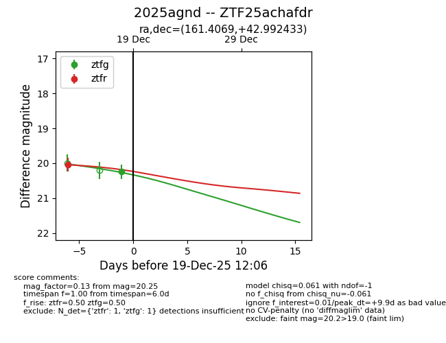
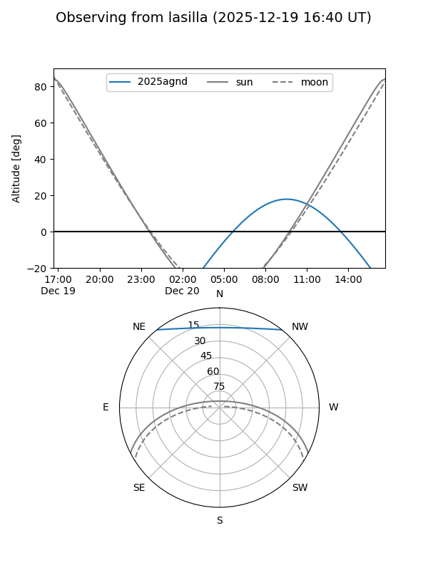
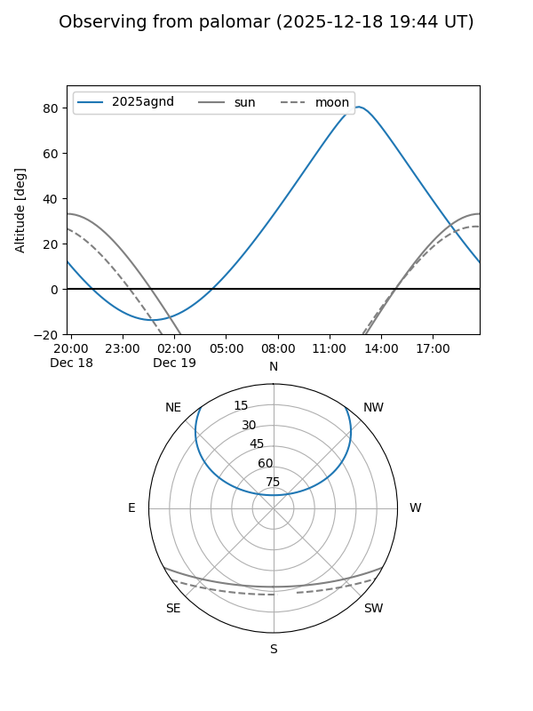
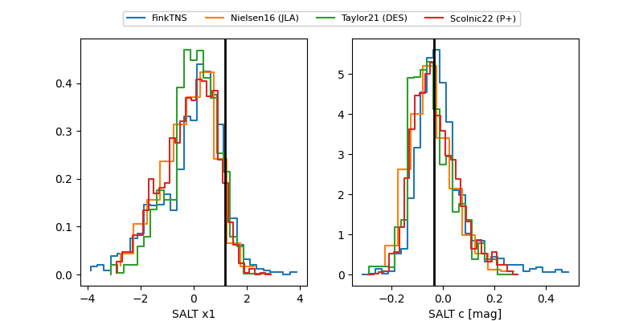

2025agnd
Target 2025agnd at 2025-12-19 12:07
Aliases and brokers:
FINK: fink-portal.org/ZTF25achafdr
Lasair: lasair-ztf.lsst.ac.uk/objects/ZTF25achafdr
ALeRCE: alerce.online/object/ZTF25achafdr
TNS: wis-tns.org/object/2025agnd
YSE: ziggy.ucolick.org/yse/transient_detail/2025agnd
alt names
ZTF25achafdr (ztf,fink_ztf)
2025agnd (tns,yse)
Coordinates:
equatorial (ra, dec) = 161.4069,+42.99243
equatorial (HMS+DMS) = 10:45:37.66,+42:59:32.76
galactic (l, b) = (172.7466,+60.02758)
Flags:
Photometry:
last ztfg=20.25, ztfr=20.04
1 ztfg, 1 ztfr detections
Lightcurve

Visibility


Additional plots
